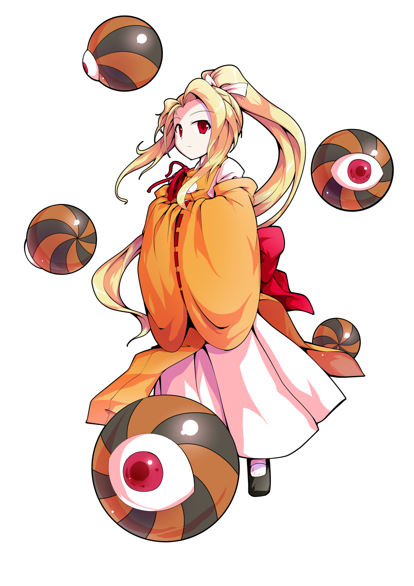

東方project
| 東方紹介 | キャラクター紹介 | bgm紹介 | 作品紹介 | スペルカード集 |
キャラクター紹介
| 外観 | 名前 | 種族 | 主な能力 | |
win版 |
||||
主人公 |
||||
 | 博麗霊夢 | 人間 | 空を飛ぶ程度の能力 | |
| 霧雨魔理沙 | 人間 | 魔法を使う程度の能力 | ||
東方紅魔郷 |
||||
| ルーミア | 妖怪 | 闇を操る程度の能力 | ||
| 大妖精 | 妖精 | 無し | ||
| チルノ | 妖精 | 氷と冷気を扱う程度の能力 | ||
| 紅美鈴 | 妖怪 | 気を使う程度の能力 | ||
| 小悪魔 | 悪魔 | 無し | ||
| パチュリー・ノーレッジ | 魔法使い | 火水木金土日月を操る程度の能力 | ||
| 十六夜咲夜 | 人間 | 時を操る程度の能力 | ||
| レミリア・スカーレット | 吸血鬼 | 運命を操る程度の能力 | ||
 | フランドール・スカーレット | 吸血鬼 | ありとあらゆるものを破壊する程度の能力 | |
東方妖々夢 |
||||
| レティ・ホワイトロック | 妖怪 | 寒気を操る程度の能力 | ||
| 橙 | 妖獣 | 妖術を扱う程度の能力 | ||
| アリス・マーガトロイド | 魔法使い | 人形を操る程度の能力 | ||
| リリーホワイト | 妖精 | 春が来たことを伝える程度の能力 | ||
| ルナサ・プリズムリバー | 騒霊 | 鬱の音を演奏する程度の能力 | ||
| メルラン・プリズムリバー | 騒霊 | 操の音を演奏する程度の能力 | ||
| リリカ・プリズムリバー | 騒霊 | 幻想の音の演奏する程度の能力 | ||
| 魂魄妖夢 | 半人半霊 | 剣術を扱う程度の能力 | ||
| 西行寺幽々子 | 亡霊 | 死を操る程度の能力 | ||
| 八雲藍 | 妖獣 | 式神を操る程度の能力 | ||
| 八雲紫 | 妖怪 | 境界を操る程度の能力 | ||
東方萃夢想 |
||||
| 伊吹萃香 | 鬼 | 密と疎（密度）を操る程度の能力 | ||
東方永夜抄 |
||||
 | リグル・ナイトバグ | 妖怪 | 蟲を操る程度の能力 | |
| ミスティア・ローレライ | 妖怪 | 歌で人を狂わす程度の能力 | ||
| 上白沢慧音 | 獣人 | 歴史を食う、創る程度の能力 | ||
| 因幡てゐ | 妖獣 | 人を幸運にする程度の能力 | ||
| 鈴仙・優曇華院・イナバ | 玉兎 | 狂気を操る程度の能力 | ||
| 八意永琳 | 月人(蓬莱人) | あらゆる薬を作る程度の能力 | ||
| 蓬莱山輝夜 | 月人(蓬莱人) | 永遠と須臾を操る程度の能力 | ||
| 藤原妹紅 | 月人(蓬莱人) | 老いることも死ぬこともない程度の能力 | ||
東方文花帖 |
射命丸文 | 天狗 | 風を操る程度の能力 | |
東方花映塚 |
||||
| メディスン・メランコリー | 妖怪 | 毒を操る程度の能力 | ||
| 風見幽香 | 妖怪 | 花を操る程度の能力 | ||
 | 小野塚小町 | 死神 | 距離を操る程度の能力 | |
| 四季映姫・ヤマザナドゥ | 閻魔 | 白黒はっきりさせる程度の能力 | ||
東方風神録 |
||||
| 秋静葉 | 紅葉の神 | 紅葉を司る程度の能力 | ||
| 秋穣子 | 豊穣の神 | 豊穣を司る程度の能力 | ||
| 鍵山雛 | 厄神 | 厄をため込む程度の能力 | ||
| 河城にとり | 河童 | 水を操る程度の能力 | ||
| 犬走椛 | 白狼天狗 | 千里先まで見通す程度の能力 | ||
| 東風谷早苗 | 人間 | 奇跡を起こす程度の能力 | ||
| 八坂神奈子 | 神 | 乾を創造する程度の能力 | ||
| 洩矢諏訪子 | 神 | 坤を創造する程度の能力 | ||
東方緋想天 |
||||
| 永江衣玖 | 妖怪 | 空気を読む程度の能力 | ||
| 比那名居天子 | 天人崩れ | 大地を操る程度の能力 | ||
東方地霊殿 |
||||
| キスメ | 釣瓶落とし | 鬼火を落とす程度の応力 | ||
| 黒谷ヤマメ | 土蜘蛛 | 病気(主に感染症)を操る程度の能力 | ||
| 水橋パルスィ | 橋姫 | 嫉妬心を操る程度の能力 | ||
| 星熊勇儀 | 鬼 | 怪力乱神を持つ程度の能力 | ||
| 古明地さとり | 妖怪 | 心を読む程度の能力 | ||
| 火焔猫燐 | 火車 | 死体を持ち去る程度の能力 | ||
| 霊烏路空 | 核融合をを操る程度の能力 | |||
| 古明地こいし | 妖怪 | 無意識を操る程度の能力 | ||
東方星蓮船 |
||||
| ナズーリン | 妖怪 | 探し物を探し当てる程度の能力 | ||
| 多々良小傘 | 唐傘お化け | 人間を驚かす程度の応力 | ||
| 雲居一輪 | 妖怪 | 入道を使う程度の能力 | ||
| 雲山 | 入道 | 形や大きさを自在に変える程度の能力 | ||
| 村紗水蜜 | 舟幽霊 | 水難事故を起こす程度の能力 | ||
| 寅丸星 | 妖怪 | 財宝が集まる程度の能力 | ||
| 聖白蓮 | 魔法使い | 魔法を使う程度の能力 | ||
| 封獣ぬえ | 鵺 | 正体を判らなくする程度の能力 | ||
東方非想天則 |
||||
| 設定のみ存在 | 大ナマズ | ナマズ | ||
| ゴリアテ人形 | 人形 | |||
| 非想天則 | ロボット | |||
ダブルスポイラー |
||||
| 姫海棠はたて | 天狗 | 念写をする程度の能力 | ||
| 東方神霊廟 | ||||
 | 幽谷響子 | 妖怪 | 音を反射させる程度の能力 | |
| 宮古芳香 | キョンシー | 何でも喰う程度の能力 | ||
| 霍青娥(青娥娘々) | 仙人 | 壁をすり抜けられる程度の能力 | ||
| 蘇我屠自古 | 亡霊 | 雷を起こす程度の能力 | ||
| 物部布都 | 人間 | 風水を操る程度の能力 | ||
| 豊聡耳神子 | 聖人 | 十人の話を同時に聞くことができる程度の能力 | ||
| 二ッ岩マミゾウ | 妖獣 | 化けさせる程度の能力 | ||
東方心綺楼 |
||||
| 秦こころ | 妖怪 | 感情を操る程度の能力 | ||
東方輝針城 |
||||
| わかさぎ姫 | 人魚 | 水中だと力が増す程度の能力 | ||
| 赤蛮奇 | 妖怪 | 頭を飛ばせる程度の能力 | ||
| 今泉影狼 | 妖獣 | 満月の夜に狼に変身する程度の能力 | ||
 | 九十九弁々 | 付喪神 | 自ら音を発して演奏できる程度の能力 | |
| 九十九八橋 | 付喪神 | 自ら音を発して演奏できる程度の能力 | ||
| 鬼人正邪 | 天邪鬼 | なんでもひっくり返す程度の能力 | ||
| 少名針妙丸 | 小人 | 打ち出の小槌を扱う程度の能力 | ||
| 堀川雷鼓 | 付喪神 | なんでもリズムに乗らせる程度の能力 | ||
東方深秘録 |
||||
 | 宇佐見菫子 | 女子高生 | 人間超能力を操る程度の能力 | |
東方紺珠伝 |
||||
| 清蘭 | 玉兎 | 異次元から弾丸を飛ばす程度の能力 | ||
| 鈴瑚 | 玉兎 | 団子を食べる程に強くなる程度の能力 | ||
| ドレミー・スイート | 獏 | 夢を喰い夢を創る程度の能力 | ||
| 稀神サグメ | 月の民 | 口に出すと事態を逆転させる程度の能力 | ||
| クラウンピース | 妖精 | 人を狂わす程度の能力 | ||
| 純狐 | 神霊 | 純化させる程度の能力 | ||
| ヘカーティア・ラピスラズリ | 神 | 三つの身体を持つ程度の能力 | ||
東方天空璋 |
||||
| エタニティラルバ | 妖精 | 鱗粉をまき散らす程度の能力 | ||
| 坂田ネムノ | 山姥 | 聖域を作る程度の能力 | ||
| 高麗野あうん | 狛犬 | 神仏を見つけ出す程度の能力 | ||
| 矢田寺成美 | 地蔵(魔法使い) | 魔法を使う程度の能力 | ||
| 爾子田里乃 | 人間 | 後ろで踊ることで精神力を引き出す程度の能力 | ||
| 丁礼田舞 | 人間 | 後ろで踊ることで生命力を引き出す程度の能力 | ||
| 摩多羅隠岐奈 | 秘神 | あらゆるもの背中に扉を作る程度の能力 | ||
東方憑依華 |
||||
 | 依神女苑 | 疫病神 | 財産を消費させる程度の能力 | |
 | 依神紫苑 | 貧乏神 | 自分を含め不運にする程度の能力 | |
東方鬼形獣 |
||||
| 戎瓔花 | 水子の霊 | 上手に石を積む程度の能力 | ||
| 牛崎潤美 | 牛鬼 | 身近な物の重さを変える程度の能力 | ||
 | 庭渡久侘歌 | 神 | 喉の病気を癒す程度の能力 | |
| 吉弔八千慧 | 吉弔 | 逆らう気力を失わせる程度の能力 | ||
| 杖刀磨弓 | 埴輪 | 忠誠心がそのまま強さになる程度の能力 | ||
| 埴安神袿姫 | 神 | 偶像を作り出す程度の能力 | ||
 | 驪駒早鬼 | 驪駒 | 比類無き脚力を持つ程度の能力 | |
東方香霖堂 |
 | 森近霖之助 | 人間と妖怪のハーフ | 道のアイテムの名称と用途がわかる程度の能力 |
| 名無しの本読み妖怪(朱鷺子) | 何かの妖怪 | 不明 | ||
東方三月精 |
||||
| サニーミルク | 日の光の妖精 | 光の屈折を操る程度の能力 | ||
| ルナチャイルド | 月の光の妖精 | 周りの音を消す程度の 能力 | ||
| スターサファイア | 星の光を操る程度の能力 | 生き鋳物の動きを捕捉するだけの能力 | ||
東方求聞史紀 東方求聞口授 |
||||
| 稗田阿求 | 人間 | 一度見たものを忘れない程度の能力 | ||
東方儚月抄 |
||||
| 綿月豊姫 | 月人 | 海と山をつなぐ程度の能力 | ||
| 綿月依姫 | 月人 | 神霊の依代となる程度の能力 | ||
| レイセン | 月の兎 | 無し | ||
東方茨歌仙 |
||||
| 茨木華扇(茨華仙) | 鬼/仙人 | 無し | ||
東方鈴奈庵 |
||||
| 本居小鈴 | 人間 | 妖魔本を読む程度の能力 | ||
東方酔蝶華 |
||||
| 奥野田美宵 | 座敷わらし | 酒を呑ませた相手の記憶を操り自身のことを忘れさせる程度の能力 | ||
秘封倶楽部 |
||||
| 宇佐見蓮子 | 人間 | 星を見ただけで今の時間が分かり、月を見ただけで今居る場所が分かる程度の能力 | ||
| マエリベリー・ハーン | 人間 | 結界の境目が見える程度の能力 | ||
その他(サブキャラ) |
||||
| 冴月麟 | ||||
| 設定のみ存在 | レイラ・プリズムリバー | |||
| 魂魄妖忌 | 半人半霊 | |||
| リリーブラック | 妖精 | |||
| 設定のみ存在 | 聖命蓮 | |||
| 設定のみ存在 | 霧雨の親父さん | |||
| 設定のみ存在 | 先代の巫女 | |||
| 設定のみ存在 | 嫦娥 | |||
旧作 |
||||
主人公 |
||||
| 博麗靈夢 | 人間 | |||
| 霧雨魔理沙 (最初は封魔録4面ボス) | 人間 | |||
東方靈異伝 |
||||
| ShinGyoku | 不明 | |||
|  | YuugenMagan | 妖怪 | ||
| Elis | 悪魔 | |||
| Sariel | 天使 | |||
| 魅魔 | 悪霊 | |||
| kikuri | 不明 | |||
| konngara | 不明 | |||
東方封魔録 |
||||
| 玄爺 | 亀 | |||
| 里香 | 人間 | |||
| 明羅 | 人間 | |||
東方夢時空 |
||||
| エレン | 魔女 | |||
| 小兎姫 | 人間 | |||
| カナ・アナベラル | 騒霊 | |||
| 朝倉理香子 | 人間 | |||
| 北白河ちゆり | 人間 | |||
| 岡崎夢美 | 人間 | |||
| る～こと | アンドロイド | |||
| 画像なし | ミミちゃん | ICBM | ||
| 画像なし | ま○ち | アンドロイド | ||
東方幻想郷 |
||||
 | オレンジ | 妖怪 | ||
| くるみ | 妖怪 | |||
| エリー | 妖怪 | |||
| 幽香 | 妖怪 | |||
| 夢月 | 悪魔 | |||
| 幻月 | 悪魔 | |||
東方怪綺談 |
||||
| サラ | 魔界人 | |||
| ルイズ | 魔界人 | |||
| アリス | 魔法使い | |||
| ユキ | 魔法使い | |||
| マイ | 魔法使い | |||
| 夢子 | 魔界人 | |||
 | 神綺 | 神 | ||
ピクシブ百科事典